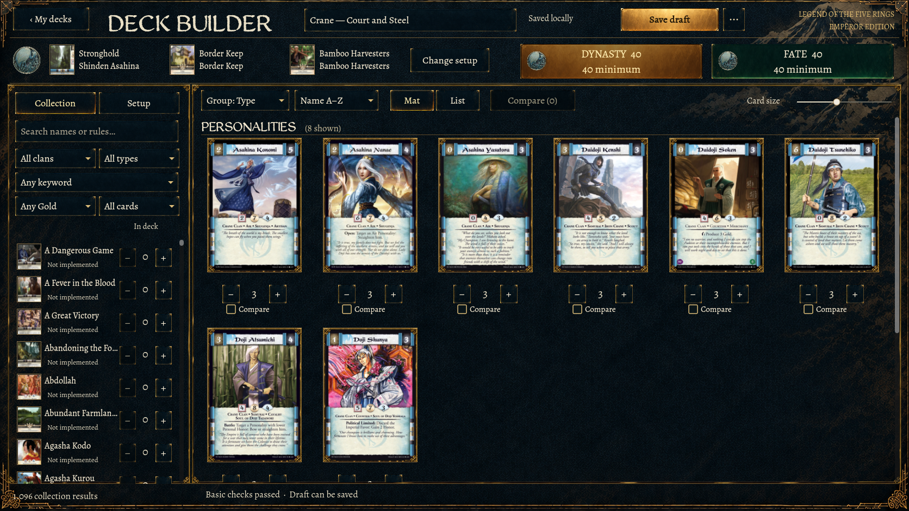
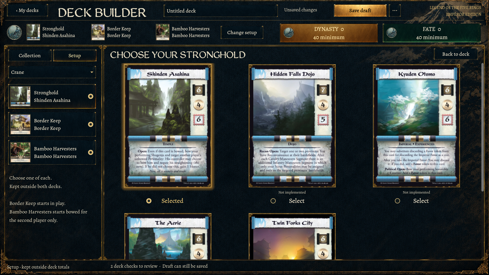
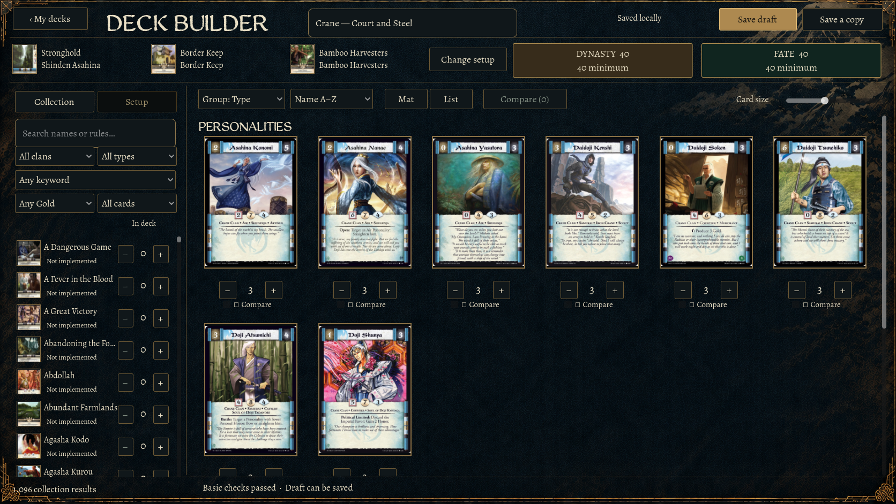
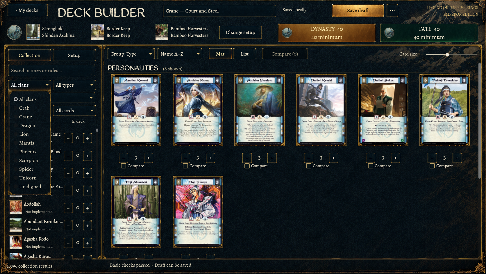
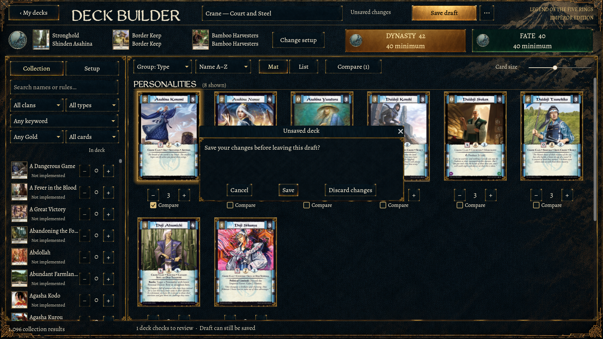
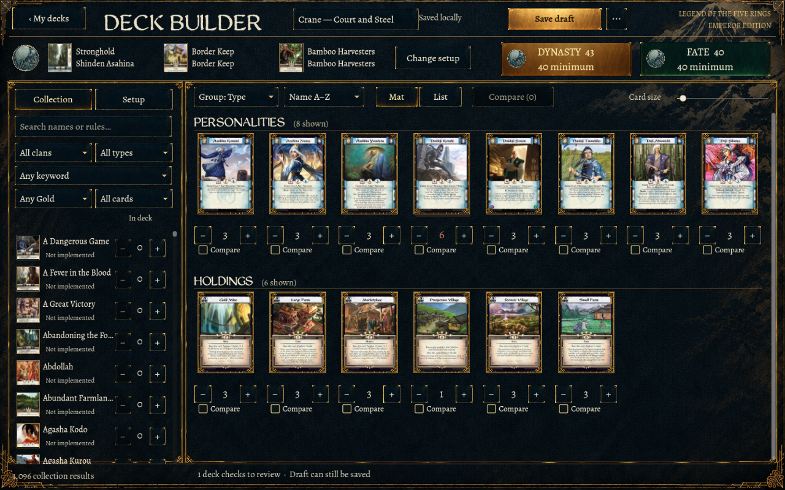
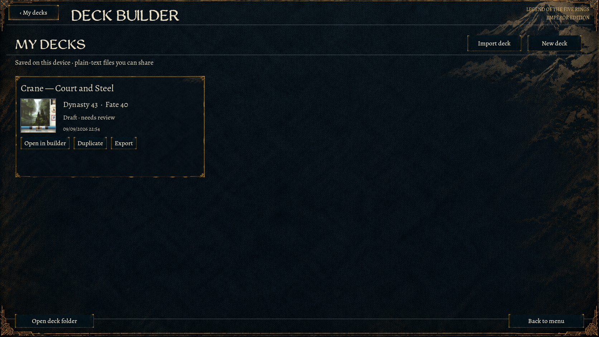

Approved mat versus revised game



Native Godot captures after replacing the rejected flat controls. Generated lacquer and brass are now the actual button materials; labels, selection states and quantities remain live. Panel borders, checkbox/radio markers, setup thumbnails, dropdowns and dialogs share the treatment.








